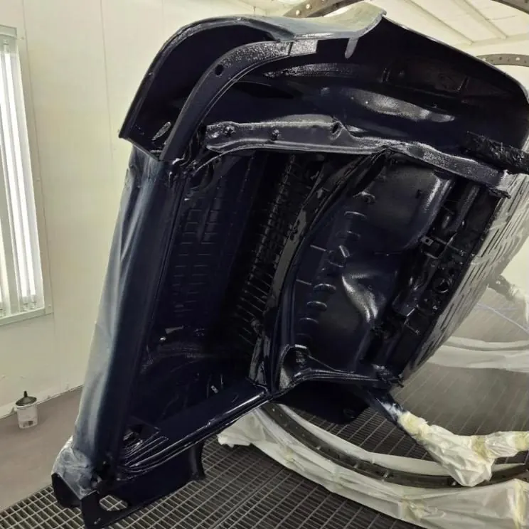
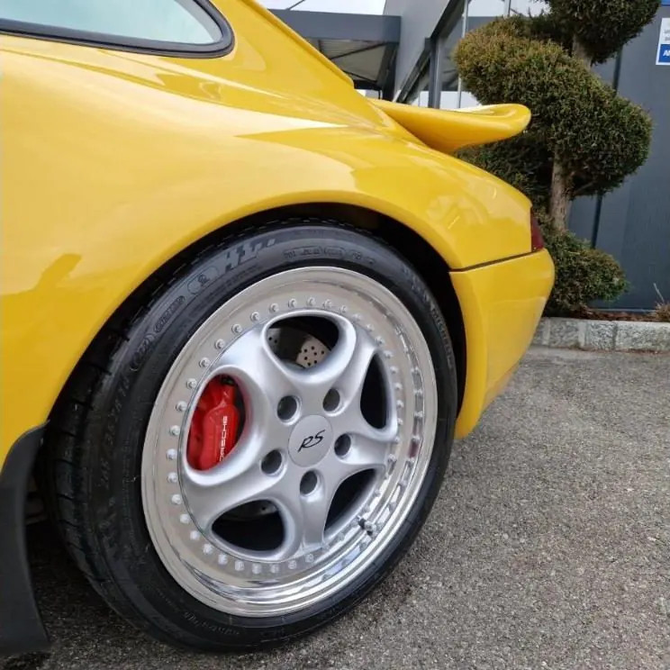

- Étape 1 sur 4

La caisse sur rotissoire
La caisse est fixée sur une rotissoire : elle peut pivoter pour que chaque recoin soit accessible, dessous compris.
- Étape 2 sur 4
Le masquage
Avant la peinture, les zones à protéger sont masquées avec soin.
- Étape 3 sur 4

Les intérieurs en apprêt
L'habitacle et les parties intérieures reçoivent leur apprêt en cabine.
- Étape 4 sur 4

Le soubassement
Grâce à la rotissoire, le soubassement est peint comme le reste de la caisse.
Restauration
Redonner vie aux anciennes.
Oldtimers et youngtimers : l'atelier démonte, prépare et repeint, jusqu'aux parties que l'on ne voit pas. Exemple avec une Porsche 911 en cours de restauration.
Dossier en cours
Porsche 911 : les intérieurs.
- Véhicule
- Porsche 911
- Intervention
- Peinture des intérieurs
- Méthode
- Caisse sur rotissoire, en cabine
- Début
- Août 2026
- Statut
- En cours
Autres réalisations
Déjà rendues à leurs propriétaires.



Un projet de restauration ?
Présentez votre véhicule et ce que vous souhaitez faire : l'atelier vous rappelle.